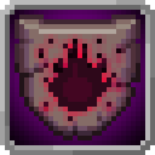
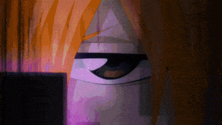
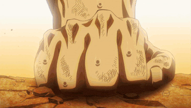
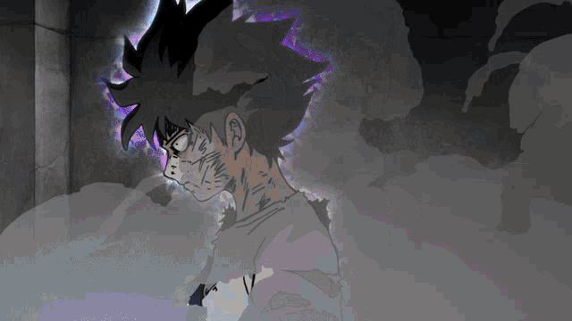
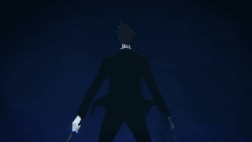
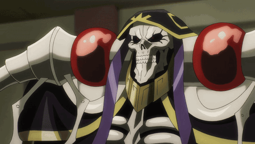

『 Resistência a Estocada 』
Tipo: Passiva Verdadeira
Efeito:
Dano de estocada é reduzido à metade.
+2 em rolagens contra ataques de estocada.

『 Resistência a Ataques de Trevas 』
Tipo: Passiva Verdadeira
Efeito:
Dano de trevas é reduzido à metade.
+2 em testes para resistir ou escapar de efeitos de trevas.

imagem temporaria
『 Resistência a Ataques Mágicos 』
Tipo: Passiva Verdadeira
Efeito:
Dano mágico é reduzido à metade.
+2 em testes para resistir ou escapar de efeitos de magias.

『 Resistência a Ataques de Gravidade 』
Tipo: Passiva Verdadeira
Efeito:
Dano de gravidade é reduzido à metade.
+2 em testes para resistir ou escapar de efeitos de gravidade.

『 Peso Gravitacional 』
Tipo: Ativa
Custo: 1 de mana por ponto de gravidade por rodada
Alvo: Qualquer alvo
Alcance: 20 metros
Duração: Sustentada
Você manipula a gravidade aplicada ao alvo, atribuindo pontos positivos ou negativos de gravidade.
Para cada ponto de gravidade positiva:
-1 em Agilidade
-1 em ataques de longo alcance
+1 em ataques corpo a corpo
Para cada ponto de gravidade negativa:
+1 em Agilidade
+1 em ataques de longo alcance
-1 em ataques corpo a corpo
Observações:
A quantidade de pontos de gravidade pode ser alterada a cada rodada.
A habilidade só pode ser desativada na troca de rodada.

『 Telepatia 』
Tipo: Ativa
Alvo: Qualquer ser consciente
Alcance: 20 metros
Duração: Sustentada
Você estabelece uma conexão mental direta com um ser consciente dentro do alcance. A comunicação ocorre de mente para mente, ignorando barreiras linguísticas. O alvo compreende perfeitamente a intenção, emoção e significado da mensagem transmitida, independentemente de idioma ou forma de comunicação habitual. A troca é bidirecional enquanto a habilidade estiver ativa, permitindo diálogo mental contínuo. Podendo ser brevemente pausada por ambos lados.
Observações:
O alvo precisa possuir consciência ativa para que a comunicação seja estabelecida.
Seres com resistência mental ou habilidades de proteção psíquica podem bloquear ou perceber a tentativa de conexão.
『 Sentidos Sombrios 』
Tipo: Ativa
Custo: 5 de mana por rodada
Alvo: Próprio usuário
Alcance: 20 metros
Duração: Sustentada
Enquanto estiver dentro de uma área de sombra, você expande sua percepção através da escuridão ao seu redor. Você passa a sentir tudo o que estiver em contato com sombras dentro do alcance como se estivesse fisicamente presente no local, incluindo visão, audição, tato e percepção de movimento. A percepção ignora obstruções físicas comuns, desde que haja conexão por sombra contínua até o ponto observado.
Concede vantagem contra ataques surpresa e emboscadas enquanto a habilidade estiver ativa.
Observações:
A área precisa estar parcialmente ou completamente envolta em sombra para que possa ser percebida.
Ambientes completamente iluminados impedem o uso da habilidade.

『 Aceleração de Pensamento 』
Tipo: Passiva Variável
Alvo: Próprio usuário
Alcance: Próprio
Duração: Contínua
Seu processamento mental opera em velocidade superior à de um humano comum, permitindo análise, cálculo e tomada de decisão em ritmo acelerado. Sua capacidade de raciocínio pode alcançar até o dobro da velocidade normal.
Magias e habilidades que exigem tempo de conjuração têm sua duração reduzida em:
1 turno (mínimo de 1 turno) ou 1 ação (ação completa > ação de ataque > ação de movimento > ação bônus > ação livre).
Observações:
Não reduz o custo de mana das habilidades.
Não permite executar múltiplas ações físicas adicionais por rodada.
Não pode reduzir conjurações instantâneas.

『 Força de Aço 』
Tipo: Ativa
Custo: 2 de magículas
Alvo: Próprio usuário
Alcance: Próprio
Duração: 2 rodadas
Você concentra sua força física além dos limites normais, tensionando músculos e estrutura corporal para liberar um poder bruto superior.
Enquanto ativa, você recebe:
+2 em rolagens de Força
+1d4 de dano adicional.
Observações:
Pode ser desativada apenas na troca de rodada.

『 Bestializar 』
Tipo: Ativa
Alvo: Próprio usuário
Alcance: Próprio
Duração: Até ser desfeita
Você altera sua estrutura física, alternando livremente entre sua forma humanoide e sua forma bestial.
A transformação pode assumir três estágios distintos:
Forma Bestial Completa:
+2 em Agilidade
-2 em Inteligência
Forma Híbrida ou Parcial:
+1 em Agilidade
-1 em Carisma
A forma humanoide não concede modificadores.
Observações:
Cada mudança de forma consome o custo total da habilidade.
A transformação é instantânea, mas apenas uma pode ser realizada por rodada.
Enquanto na forma humanoide você ainda tem traços animais, como orelhas no topo da cabeça, cauda e etc.


『 Corpo Bestial 』
Tipo: Ativa
Custo: 5 de magículas
Alvo: Próprio usuário
Alcance: Próprio
Duração: 3 rodadas
Devido à sua linhagem de licantropo, você desperta um estado primitivo de combate, amplificando temporariamente suas capacidades físicas além dos limites naturais.
Enquanto ativo, você recebe:
+5 em Força
+5 em Vigor
+5 em Agilidade
Além disso, ao ativar a habilidade, você recupera:
1d15 de Vida
1d5 de Estamina
Ao término da duração, o corpo sofre um forte rebote fisiológico, recebendo:
-5 em Força
-5 em Vigor
-5 em Agilidade
E perde:
1d5 de Estamina.
O rebote dura até recuperar toda a estamina ou após um descanso longo (no mínimo 8 hrs).
Observações:
O rebote ocorre automaticamente ao final da duração e não pode ser evitado.
Caso o usuário esteja com 0 de estamina ao sofrer o rebote, ele fica desmaiado até recuperar pelo menos 1 de estamina.
A habilidade não pode ser reativada enquanto os efeitos do rebote estiverem ativos.

『 Auto Regeneração 』
Tipo: Passiva Verdadeira
Custo: 1 magícula por ativação automática
Alvo: Próprio usuário
Enquanto possuir magículas e um corpo material não completamente destruído, o corpo do usuário se reconstrói automaticamente ao sofrer danos. Sempre que o usuário sofrer dano, a habilidade é ativada automaticamente, consumindo 1 magícula e restaurando 1d8 de Vida no início do turno seguinte.
A regeneração é capaz de reconstruir tecidos,órgãos internos e até membros perdidos, desde que ainda exista estrutura corporal suficiente para sustentar a recuperação.
Observações:
A habilidade não pode ser desativada. Apenas por meios externos.
Caso o usuário não possua magículas suficientes, a regeneração não ocorre.
Múltiplas fontes de dano na mesma rodada ainda consomem apenas 1 magícula, ativando apenas uma instância de regeneração por rodada.
Não regenera caso o corpo seja completamente destruído ou desintegrado.

『 Exoesqueleto 』
Tipo: Passiva Verdadeira
Seu corpo possui uma estrutura óssea externa que funciona como uma armadura natural, tornando-o significativamente mais resistente que a maioria das criaturas.
Você recebe:
Vig+10 de Bloqueio
Além disso, é considerado permanentemente como estando usando armadura para fins mecânicos, mesmo que não esteja utilizando equipamentos defensivos.
Observações:
Pode ser quebrada, assim desativando seu efeito.
Enquanto sob efeito desta habilidade não é possível usar uma armadura.

『 Asas de Mariposa 』
Tipo: Passiva/Ativa
Devido à sua fisiologia de mariposa, você possui asas funcionais adaptadas para sustentação aérea leve.
Você recebe:
Metade de sua Movimentação como deslocamento de Voo.
Esse voo é estável em curtas distâncias e permite permanecer no ar por alguns minutos antes de necessitar pousar ou descansar. A habilidade não exige ativação consciente, mas depende da integridade física das asas.

『 Corpo de Magíaço 』
Tipo: Passiva Verdadeira
Devido à sua constituição composta por Magíaço, seu corpo possui resistência estrutural superior à de criaturas comuns.
Você recebe:
+2 em Vigor
+5 de Bloqueio
Além disso, é considerado permanentemente como estando usando armadura para fins mecânicos, mesmo que não esteja utilizando equipamentos defensivos.
Observações:
Efeitos que ignoram armadura ainda podem afetar o usuário normalmente.
A habilidade não pode ser desativada ou suprimida por meios comuns.